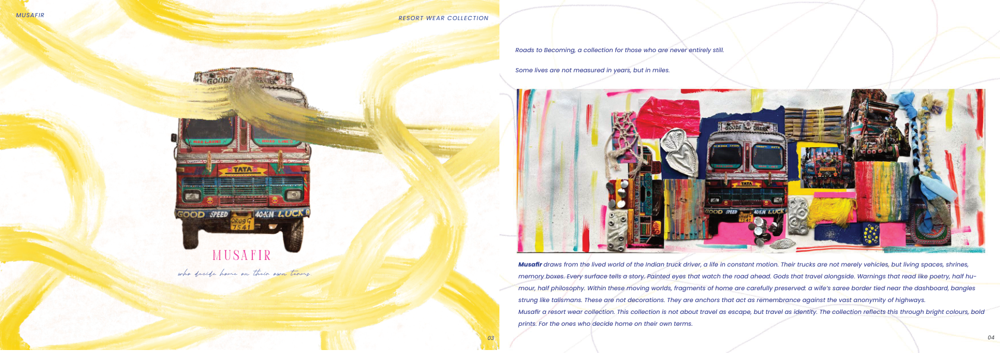
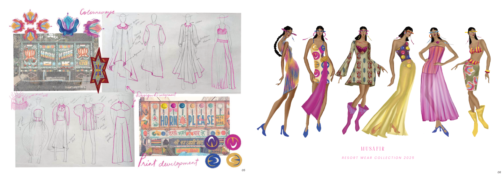

01 — COLLECTION
Musafir
Roads to Becoming — a resort wear collection inspired by the lived world of the Indian truck driver, where trucks become moving homes, shrines and memory boxes.
Bright colours · Bold prints · Travel as identity

